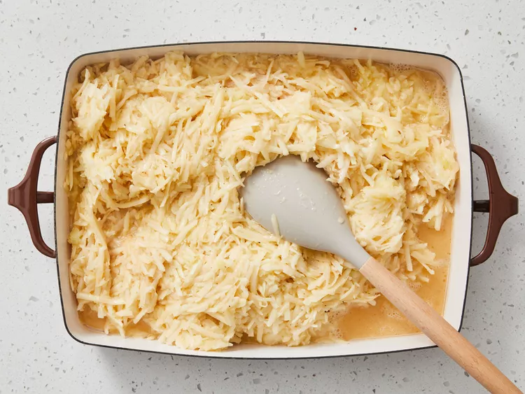
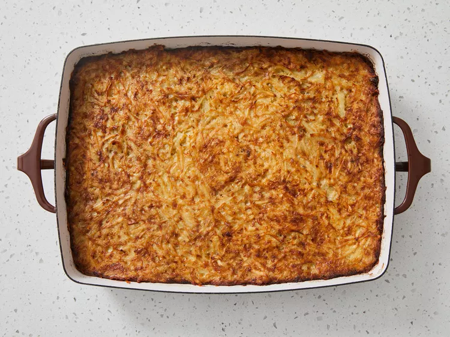

Back to Main Page
Potato Kugel

Description
Potato Kugel is a traditional Jewish dish made of grated potatoes, onions, and eggs. It's crispy on the outside and soft on the inside.
It's often served during holidays like Passover and is loved for its comforting texture and savory flavor.
Ingredients
- 1 tablespoon vegetable oil
- 10 medium potatoes, peeled and grated
- 2 medium onions, peeled and grated
- 5 large eggs
- 1/3 cup vegetable oil
- 2 teaspoons salt
- 1 teaspoon black pepper
Steps
- Gather all ingredients. Preheat the oven to 350 degrees F (175 degrees C). Grease a 9x13-inch baking dish with 1 tablespoon vegetable oil.
- Combine grated potatoes and onions in a large bowl. Mix in eggs, 1/3 cup of vegetable oil, salt, and pepper until well combined; pour mixture into the prepared dish.

- Bake in the preheated oven until golden brown and crisp on top, 1 ½ to 2 hours.
